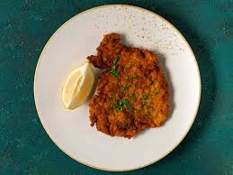

Chicken Schnitzel Recipe

Ingredients
- Two eggs, beaten
- Flour
- Breadcrumbs
- Olive oil
- Chicken tenders
- Old Bay
- Salt
- Pepper
Steps
- De-tendon the chicken tenders and season with salt and pepper.
- Mix old bay and breadcrumbs in a bowl.
- In another bowl put out the flour.
- In a third bowl put the beaten eggs.
- Meanwhile, take olive oil (about a 1/4 in the pan) and heat it in a pan over medium.
- Take each tender dip it in the flour until coated, dip it in the eggs until coated, and finally dip it into the old bay/breadcrumbs mixture.
- Put the tenders on the pan.
- Cook for about 5-8 minutes per side on medium.
Return Home